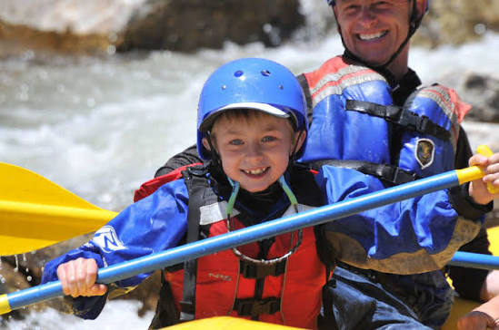

Welcome to Calhuitz Rafting! We are dedicated to providing thrilling and safe rafting experiences for adventurers of all skill levels. Our team of experienced guides is passionate about sharing the beauty of nature and the excitement of white-water rafting.
Our mission is to create unforgettable memories while promoting environmental stewardship and safety on the water. Join us for an adventure you'll never forget!